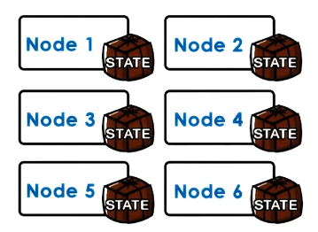
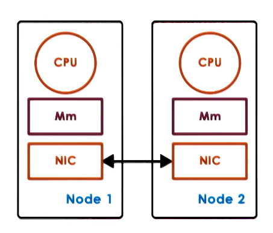
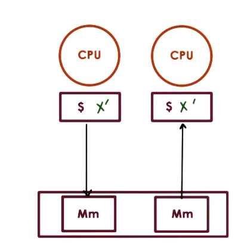
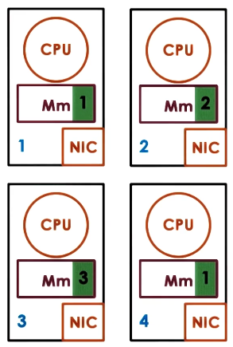
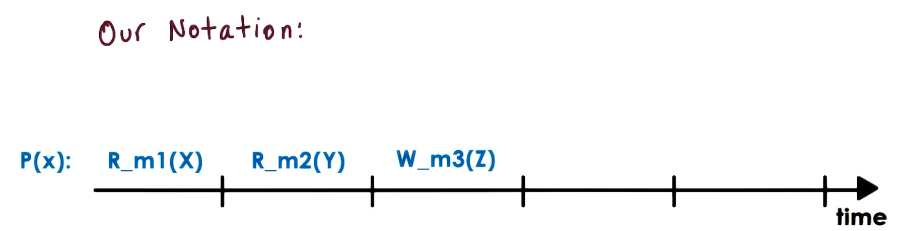
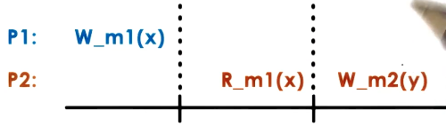
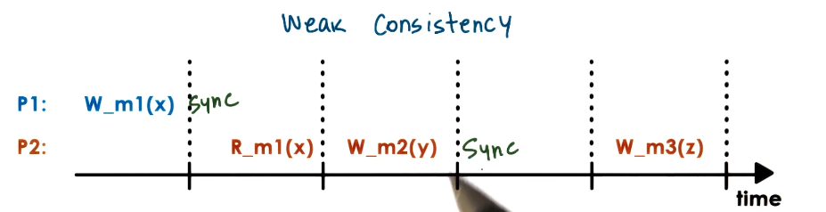

GIOS Lecture Notes - Part 4 Lesson 3 - Distributed Shared Memory
Distributed Shared Memory (DSM)
Reviewing DFS’s
- Clients
- send requests to file service
- Servers
- own and manage state (files)
- provide service (file access)
- Caching
- improve performance (as seen by clients) and scalability (as seen by servers)
- What we didn’t talk about
- What happens if there are multiple servers? How do they coordinate
- Situations in which all nodes in the system are both servers and clients (p2p)
Peer Distributed Applications

- For modern big data apps, state is distributed across many/all nodes
- CPUs on these nodes perform tasks, accessing state from all nodes
- Each node
- “owns” state
- own == some state stored locally or generated by local computation
- provides service
- all nodes are peers
- “owns” state
- overall application state is the union of the state on all nodes
- Examples
- big data analytics, web search, content sharing, or distributed shared memory (DSM)
- Peer is kind of in quotes, as there may still be designated nodes for specific management or control tasks
- In a fully peer-to-peer system, this would be evenly distributed among all nodes
Hardware vs Software DSM

- Hardware-supported DSM
- relies on high-end interconnect
- OS running on each node thinks it has larger physical memory, spanning the various nodes
- establishes VA to PA on other nodes
- NICs translate remote memory accesses to messages
- NICs involved in all aspects of memory management
- must support specific atomics for this
- Cons
- this hardware is very expensive
- used only for things like HPC
- Software-supported DSM
- everything done by software
- Done by OS or a language runtime
DSM Design: Sharing Granularity
- Cache line granularity?
- This is what is used in SMP-level sharing
- But the overheads are too high for DSM due to network cost
- Variable granularity
- meaningful for programmers but probably too fine granularity to be practical
- integers are only a few bytes, for example
- meaningful for programmers but probably too fine granularity to be practical
- Page granularity (OS-level)
- makes a bit more sense
- track when pages are modified, trigger messages
- pages are large enough to reduce overhead. can amortize cost of remote access
- Object granularity (language runtime)
- would be workable
- OS doesn’t really understand objects, only pages
- Runtime understands which objects are local/remote
- Runtime can generate all necessary boilerplate for remote objects.
- OS can stay out of the way.
- Applicable only for languages with DSM support
- Beware of false sharing!
- Picture two nodes, both having variables x and y.
- Node 1 wants to write(x), Node 2 wants to write(y)
- X and Y are on the same page
- DSM using page granularity only knows shared page, nothing more granular.
- Will trigger coherence operations even though there really isn’t any state being shared here.
- Dev is responsible for making sure X and Y aren’t on the same page in this scenario
- Or to rely on some smart compiler that can recognize shared state and allocate appropriately
DSM Design: Access Algorithm
- What types of access algorithms must be supported?
- Single reader/single writer (SRSW)
- For this type of algo, the main role of the DSM layer is just to provide additional memory to the application. No real consistency or sharing challenges
- More complex arrangements are harder
- Multiple readers/multiple writers (MRMW)
- Multiple readers/single writer (MRSW)
- This is considered a special (simpler case of MRMW)
- For the above 2, must ensure:
- Reads return the most recently written value of a memory location
- All writes happen in the correct order
- These are necessary to present a coherent, consistent view of the shared state
DSM Design: Migration vs Replication
- For a DSM system to be useful, it must provide good performance
- DSM performance metric == access latency
- local memory accesses are always going to be faster than remote accesses
- So a big part of chasing performance is figuring out how to ensure that local accesses will happen more often than remote accesses
- Achieving low latency through
- Migration
- Whenever a process on a node needs to access remote state, copy the state to that node
- makes sense for SRSW
- only one node at a time will be accessing any state
- requires data movement
- incurs overhead
- may be inefficient for only a single access, no amortization
- Replication
- state is copied on multiple nodes, maybe all nodes
- more general case (MRMW)
- if multiple nodes are accessing the state, copying it all over everywhere isn’t practicle
- requires consistency management
- must coordinate operations on replicated state
- may be reduced by limiting the number of copies of state that exist at any one time. this is because consistency management overhead is proportional to the number of copies that must be kept consistent in a system
- Migration
DSM Design: Consistency Management
- Once we allow replication, consistency becomes a thing
- DSM is meant to behave similarly to shared memory in SMPs

- In SMPs
- write-invalidate
- whenever shared state is changed in one CPU cache the copies held by other caches are marked invalid
- write-update
- whenever shared state is changed in one CPU cache the copies held by other caches are updated to match it
- coherence operations triggered on each write
- again, this is too expensive for DSM]
- write-invalidate
- Push invalidations when data is written to
- similar to DSF server-based approach
- proactive
- eager
- pessimistic
- Pull modification info periodically
- on-demand or on a timer
- reactive
- lazy
- optimistic
- hoping that modified state won’t be needed soon, accumulate saved expense with longer wait periods and more changed state that can be pulled all at once
- When these methods actually get triggered depends on the consistency model for the shared state
DSM Architecture

- page-based, OS-supported
- distributed nodes, each with their own local memory contribution (may be some or all of their available physical memory)
- pool of pages from all nodes
- each page has ID (“home node”), page frame number
- need local caches for performance
- home (or manager) node drives coherence operations
- in this way all nodes are responsible for part of distributed memory (state) management (act as a “server” for their own pages)
- in this way all nodes are also clients, relying on the home nodes of all pages they don’t own to do the necessary management
- Home nodes:
- keeps state – pages accessed, modifications, caching enabled/disabled, locked, etc…
- Curerent “owner”:
- when a page is repeatedly or exclusively accessed from a node that isn’t its home it would be too expensive to always contact the home node
- So separate notion of home node from “owner”
- “owner”: the node that currently owns the page, controls the state updates and drives consistency operations for the page
- owner may change if use patterns change
- home node keeps track of who is the current owner of each page
- Explicit replicas
- For load balancing, performance, or reliability
- In datacenter environments all shared state may be kept in triplicate for the above reasons
- home/manager node controls management of these replicas
Indexing Distributed State
- How do we determine where a particular shared page is?
- DSM Metadata
- each page (object) has
- adress == node ID + page frame number
- node ID == “home” node
- Global map (replicated)
- object(page) ID => manager node ID
- replicated – manager map available on each node
- Metadata for local pages (partitioned)
- per-page metadata is distributed to the managers of each page
- Global mapping table
- object ID => index into mapping table => manager node
- this approach means that if for any reason we want to change the manager node for a given page we just need to update the mapping table. no need to make changes to object ID
- each page (object) has
Implementing DSM
- Problem
- DSM must intercept accesses to DSM state
- to send remote messages requesting access
- to trigger coherence messages
- overheads should be avoided for local, non-shared state (pages)
- therefore we would like to dynamically “engage” and “disengage” DSM when necessary
- DSM must intercept accesses to DSM state
- Solution
- Use hardware MMU support
- hardware generates trap to OS if mapping invalid or access not permitted
- remote address mapping will not be valid, so hardware will generate a trap. OS can then interpret this trap and pass to DSM to send message for remote access
- whenever content is cached on a particular node, the DSM layer can ensure it is write-protected so any attempt to modify it will cause a trap. The OS can then interpret this trap and call DSM to perform necessary coherence operations
- Other MMU information can be useful
- e.g. dirty pages, access tracking
- Use hardware MMU support
What is a Consistency Model
- Consistency model == agreement between memory (state) and upper software layers
- memory behaves correctly if and only if software follows specific rules
- software must use specific APIs for accesses/updates
- OR that software needs to set certain expectations based on what this memory guarantee is.
- This is not specific to a distributed system. Same problems with e.g. multithreading on a single system
- Solved in single systems with locks and atomics
- memory (state) guarantees to behave correctly
- access ordering
- propagation / visibility of updates
- memory behaves correctly if and only if software follows specific rules

- Notation conventions
- R_m1(x) == x was read from memory location m1
- W_m1(y) == y was written to memory location m1
- initially, at start of timeline diagrams, all memory is set to 0
Strict Consistency
- Strict consistency == updates visible to everywhere immediately
- Absolute ordering and immediate visibility of any state update and access
- In the exact same manner as those updates were performed in real time
- In practice
- even on single SMP no guarantees on order without extra locking and synchronization
- in distributed systems, latency and message reorder/loss make this even harder
- even impossible to guarantee
- In practice this just doesn’t actually work
Sequential Consistency
- Next best option with reasonable cost to strict consistency
- As long as the ordering observed is equivalent to some ordering of the operations as they would be observed on a single system, it is sequentially consistent
- If one process sees one ordering of updates, all other processes must see the same ordering
- Sequential Consistency ==
- memory updates from different processors may be arbitrarily interleaved
- ALL processes will see the same interleaving
- operations from same process always appear in order they were issued
Causal Consistency
- Forcing all processes to see identical ordering of updates may be overkill. In many cases updates are independent of each other and it wouldn’t matter
- Causal Consistency ==
- detect causal relationship between updates, even if not directly linked
- if updates are causally related, memory guarantees that those updates are correctly ordered
- for writes that are not causally related (aka “concurrent writes” in this context) there are no guarantees made
Weak Consistency
- can support more than just read and write operations
- no way for distributed memory managers to know if a given variable value is based on preceding writes of other values (e.g is y dependent on x in this image?) 

- Synchronization points == operations that are available to the upper layers of the software (R, W, Sync)
- all updates prior to a sync point will be visible to all processors
- no guarantee what happens in between after the last sync point
- Variations
- single sync operation (sync)
- separate sync per subset of state (page)
- separate entry/acquire vs exit/release operations
- These all are designed to offer more granular control of DSM consistency management
- pros
- limit data movement and coherence operation overheads
- cons
- maintain extra state for additional operations
- pros